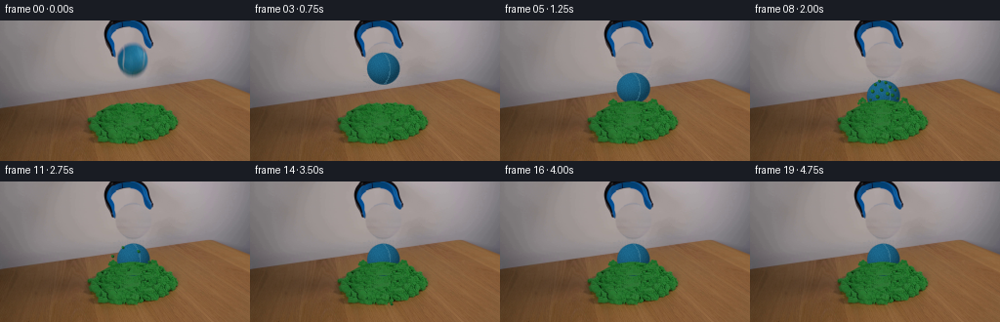
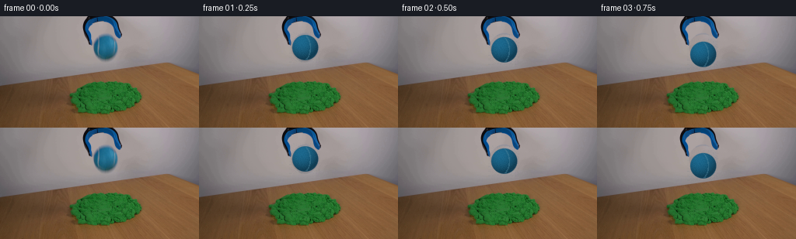

CODING AGENTS AS PIXEL WORLD MODELS
traex/GPT-5.6-Sol · 0016
点击播放 · 原生 RGB 像素
逐轮保存的候选
回放视频、检查图与代码变化。
每份候选均可单独播放。实际图片检查记录在下方工具轨迹中。
候选 01播放与检查图
点击播放 · 原生 RGB 像素

展开代码变化
--- 上一保存版本
+++ 本次保存版本
@@ -0,0 +1,162 @@
+from pathlib import Path
+import numpy as np
+import cv2
+from PIL import Image
+import artifact_io
+
+ROOT = Path(__file__).resolve().parent
+src = np.asarray(Image.open(ROOT / "first_frame.png").convert("RGB"), dtype=np.uint8)
+H, W = src.shape[:2]
+rng = np.random.default_rng(1601)
+
+# Soft masks and a clean plate for the place initially occupied by the ball.
+yy, xx = np.mgrid[:H, :W]
+cx0, cy0 = 136.2, 40.0
+rr = np.sqrt(((xx-cx0)/17.8)**2 + ((yy-cy0)/17.0)**2)
+ball_hole = rr < 1.08
+# Replace the object pixels by plaster sampled at the same height on the right,
+# color-corrected between clean strips on both sides of the object.
+clean = src.astype(np.float32).copy()
+for y in range(18, 61):
+ target = 0.52*np.median(src[y, 91:103], axis=0) + 0.48*np.median(src[y, 169:184], axis=0)
+ for x in range(116, 158):
+ if ball_hole[y, x]:
+ sx = min(W-1, x+50)
+ sample = src[y, sx].astype(np.float32)
+ reference = np.median(src[y, 176:190], axis=0)
+ clean[y, x] = sample + target-reference
+# Smooth only the synthesized area very lightly, retaining the wall's photographic grain.
+sm = cv2.GaussianBlur(clean, (0,0), .55)
+clean[ball_hole] = .55*clean[ball_hole] + .45*sm[ball_hole]
+# Feather the boundary into the original image.
+a_hole = np.clip((1.08-rr)/.10, 0, 1)[...,None]
+clean = src*(1-a_hole) + clean*a_hole
+clean = np.clip(clean, 0, 255).astype(np.uint8)
+
+# Fixed fine texture for the fuzzy blue tennis ball, so it does not shimmer frame to frame.
+tex = rng.normal(0, 1, (39,39))
+tex = tex - cv2.GaussianBlur(tex.astype(np.float32),(0,0),1.15)
+tex = tex / (tex.std()+1e-6)
+
+def composite_ball(im, cx, cy, squash=0.0, blur_tail=0.0):
+ """Paint a small, source-matched blue tennis ball with spherical shading."""
+ ry = 16.4*(1.0-squash)
+ rx = 16.7*(1.0+0.55*squash)
+ x0, x1 = max(0,int(cx-rx-3)), min(W,int(cx+rx+4))
+ y0, y1 = max(0,int(cy-ry-3)), min(H,int(cy+ry+4))
+ X, Y = np.meshgrid(np.arange(x0,x1), np.arange(y0,y1))
+ nx=(X-cx)/rx; ny=(Y-cy)/ry
+ q=nx*nx+ny*ny
+ inside=np.maximum(0,1-q)
+ nz=np.sqrt(inside)
+ # Light from the upper right, as in the source photograph.
+ lam=np.maximum(0, -0.30*nx -0.52*ny +0.80*nz)
+ edge=np.clip(nz*1.34,0,1)
+ intensity=.58 + .45*lam
+ base=np.zeros((*q.shape,3),np.float32)
+ base[...,0]=27*intensity
+ base[...,1]=101*intensity
+ base[...,2]=137*intensity
+ # Bluish ambient at the rim and a gentle highlight.
+ base += (1-edge)[...,None]*np.array([3,7,12],np.float32)
+ tx=((X-cx+19).astype(int)).clip(0,38); ty=((Y-cy+19).astype(int)).clip(0,38)
+ noise=tex[ty,tx]
+ base += noise[...,None]*np.array([1.4,2.3,2.5])
+ # A subdued curved tennis-ball seam (blue balls have a pale blue-grey seam).
+ seam_dist=np.abs(np.sqrt(((nx+.43)/.83)**2 + ((ny-.02)/1.18)**2)-1)
+ seam=(seam_dist<.055) & (nx>-.24) & (q<.93)
+ base[seam] = .58*base[seam] + .42*np.array([74,131,155])
+ alpha=np.clip((1.04-np.sqrt(q))/.075,0,1)
+ # Minute fuzz creates the soft, irregular silhouette of a tennis ball.
+ alpha=np.clip(alpha + noise*.025*(q>.78),0,1)
+ if blur_tail>0:
+ # Short translucent vertical shutter trail during the fastest part of the fall.
+ trail=np.clip((1.0-np.sqrt(((X-cx)/rx)**2+((Y-(cy-2.2))/ry)**2))/.14,0,1)*blur_tail
+ a=(trail*.16)[...,None]
+ im[y0:y1,x0:x1]=im[y0:y1,x0:x1]*(1-a)+base*a
+ a=alpha[...,None]
+ im[y0:y1,x0:x1]=im[y0:y1,x0:x1]*(1-a)+base*a
+
+def sand_color(x,y,shade=0):
+ # Palette measured from the green pile; deterministic spatial grain.
+ n=((x*37+y*19+x*y*3) % 17)-8
+ return np.clip(np.array([31,109,43])+np.array([.45*n,.7*n,.35*n])+shade,0,255)
+
+def disk(im, x,y,r,col):
+ Y,X=np.mgrid[:H,:W]; d=np.sqrt((X-x)**2+(Y-y)**2)
+ a=np.clip((r+.55-d)/1.0,0,1)[...,None]
+ im[:] = im*(1-a)+np.asarray(col)*a
+
+def paint_sand_foreground(im, phase, settle):
+ """Crater rim and sand that realistically occludes the embedded lower ball."""
+ # Wavy front boundary. At maximum impact it climbs the ball sides.
+ Y,X=np.mgrid[:H,:W]
+ centerline = 84.3 - (2.2+3.1*phase)*np.exp(-((X-136)/15.5)**2)
+ local=(X>112)&(X<160)&(Y>centerline)&(Y<96)
+ # Borrow texture from the existing mound a few pixels lower.
+ overlay=im.copy()
+ for y in range(76,97):
+ sy=min(111, y+10)
+ for x in range(111,161):
+ if local[y,x]:
+ sx=int(np.clip(x + 2*np.sin((y+x)*.45),90,181))
+ c=src[sy,sx].astype(np.float32)
+ # Ensure copied wood flecks become green sand.
+ if c[1] < c[0]*1.18:
+ c=sand_color(x,y,-3)
+ overlay[y,x]=c
+ # Slightly irregular alpha avoids a cutout edge.
+ edge=np.clip((Y-centerline+0.45)/1.4,0,1)*local
+ a=edge[...,None]
+ im[:] = im*(1-a)+overlay*a
+ # Raised crater lips, highest just after impact, then slumping.
+ lip_h=2.0+4.0*phase
+ for side in (-1,1):
+ lx=136+side*(16.5+1.8*phase)
+ for j in range(9):
+ ang=j/8*np.pi
+ x=lx+side*(j*.95)
+ y=84.5-lip_h*np.sin(ang)-.8*np.sin(j*2.1+side)
+ disk(im,x,y,1.25 if j%3 else 1.7,sand_color(int(x),int(y), 4 if j%2 else -5))
+
+def paint_particles(im, k):
+ if k < 0: return
+ # Fixed ejecta trajectories; units are pixels per 1/4-second frame.
+ particles=[(-5.7,-10.8,1.35),(-4.3,-14.2,1.0),(-3.2,-8.0,1.5),
+ (-2.2,-16.0,.9),(-1.1,-11.5,1.2),(1.0,-15.2,1.0),
+ (2.0,-9.5,1.45),(3.2,-13.0,1.05),(4.5,-8.8,1.3),
+ (5.8,-11.5,.9),(-6.8,-6.5,.85),(7.1,-7.2,.8)]
+ t=float(k)
+ for i,(vx,vy,r) in enumerate(particles):
+ x=136+vx*t
+ y=83+vy*t+2.55*t*t
+ if 1<y<130 and 2<x<W-2:
+ # faint contact shadow and a highlighted green grain
+ disk(im,x+.7,y+.7,r+.35,np.array([20,68,27]))
+ disk(im,x,y,r,sand_color(int(x),int(y), 6 if i%3==0 else -2))
+
+frames=[]
+# Ball center path: release, gravitational fall, squash, small damped rebound, settle.
+centers=[40.0,40.0,42.8,48.8,57.8,69.0,75.8,78.9,77.0,78.6,
+ 79.2,79.5,79.6,79.6,79.6,79.6,79.6,79.6,79.6,79.6]
+for f in range(20):
+ if f==0:
+ frames.append(src.copy())
+ continue
+ im=clean.astype(np.float32).copy()
+ # Keep the grabber itself exactly locked in place. The departing ball and newly
+ # visible gap between its jaws communicate the release without camera movement.
+ squash = {5:.035,6:.14,7:.075,8:.025}.get(f,0.0)
+ blur = .24 if f in (3,4,5) else 0.0
+ composite_ball(im,136.2,centers[f],squash,blur)
+ if f>=5:
+ # Compression peaks one frame after first contact and then relaxes.
+ phase={5:.18,6:1.0,7:.76,8:.54,9:.38,10:.26}.get(f,.18)
+ paint_sand_foreground(im,phase,max(0,(f-6)/5))
+ paint_particles(im,f-6)
+ frames.append(np.clip(im,0,255).astype(np.uint8))
+
+frames=np.stack(frames)
+assert frames.shape==(20,144,256,3) and frames.dtype==np.uint8
+assert np.array_equal(frames[0],src)
+artifact_io.save(frames,ROOT)
候选 02播放与检查图
点击播放 · 原生 RGB 像素


展开代码变化
--- 上一保存版本
+++ 本次保存版本
@@ -33,46 +33,40 @@
clean = src*(1-a_hole) + clean*a_hole
clean = np.clip(clean, 0, 255).astype(np.uint8)
-# Fixed fine texture for the fuzzy blue tennis ball, so it does not shimmer frame to frame.
-tex = rng.normal(0, 1, (39,39))
-tex = tex - cv2.GaussianBlur(tex.astype(np.float32),(0,0),1.15)
-tex = tex / (tex.std()+1e-6)
+# Extract the photographed ball itself. Reusing those pixels gives the moving object
+# exactly the same felt, seam, lighting and camera response as it has in frame zero.
+hsv0 = cv2.cvtColor(src, cv2.COLOR_RGB2HSV)
+bm = (((hsv0[...,0] >= 85) & (hsv0[...,0] <= 130) &
+ (hsv0[...,1] > 45))).astype(np.uint8)
+roi = np.zeros_like(bm); roi[20:60,116:158] = 1
+bm *= roi
+n, labels, stats, _ = cv2.connectedComponentsWithStats(bm)
+ball_label = max(range(1,n), key=lambda i: stats[i,4])
+ball_mask = (labels == ball_label).astype(np.uint8)*255
+ball_mask = cv2.morphologyEx(ball_mask, cv2.MORPH_CLOSE,
+ np.ones((3,3),np.uint8))
+ball_alpha = cv2.GaussianBlur(ball_mask, (0,0), .58).astype(np.float32)/255.0
def composite_ball(im, cx, cy, squash=0.0, blur_tail=0.0):
- """Paint a small, source-matched blue tennis ball with spherical shading."""
- ry = 16.4*(1.0-squash)
- rx = 16.7*(1.0+0.55*squash)
+ """Move the photographed blue tennis ball, with a little impact deformation."""
+ sy = 1.0-squash
+ sx = 1.0+0.55*squash
+ ry = 18.0*sy
+ rx = 18.0*sx
x0, x1 = max(0,int(cx-rx-3)), min(W,int(cx+rx+4))
y0, y1 = max(0,int(cy-ry-3)), min(H,int(cy+ry+4))
X, Y = np.meshgrid(np.arange(x0,x1), np.arange(y0,y1))
- nx=(X-cx)/rx; ny=(Y-cy)/ry
- q=nx*nx+ny*ny
- inside=np.maximum(0,1-q)
- nz=np.sqrt(inside)
- # Light from the upper right, as in the source photograph.
- lam=np.maximum(0, -0.30*nx -0.52*ny +0.80*nz)
- edge=np.clip(nz*1.34,0,1)
- intensity=.58 + .45*lam
- base=np.zeros((*q.shape,3),np.float32)
- base[...,0]=27*intensity
- base[...,1]=101*intensity
- base[...,2]=137*intensity
- # Bluish ambient at the rim and a gentle highlight.
- base += (1-edge)[...,None]*np.array([3,7,12],np.float32)
- tx=((X-cx+19).astype(int)).clip(0,38); ty=((Y-cy+19).astype(int)).clip(0,38)
- noise=tex[ty,tx]
- base += noise[...,None]*np.array([1.4,2.3,2.5])
- # A subdued curved tennis-ball seam (blue balls have a pale blue-grey seam).
- seam_dist=np.abs(np.sqrt(((nx+.43)/.83)**2 + ((ny-.02)/1.18)**2)-1)
- seam=(seam_dist<.055) & (nx>-.24) & (q<.93)
- base[seam] = .58*base[seam] + .42*np.array([74,131,155])
- alpha=np.clip((1.04-np.sqrt(q))/.075,0,1)
- # Minute fuzz creates the soft, irregular silhouette of a tennis ball.
- alpha=np.clip(alpha + noise*.025*(q>.78),0,1)
+ mapx=((X-cx)/sx+cx0).astype(np.float32)
+ mapy=((Y-cy)/sy+cy0).astype(np.float32)
+ base=cv2.remap(src.astype(np.float32),mapx,mapy,cv2.INTER_LINEAR,
+ borderMode=cv2.BORDER_REFLECT)
+ alpha=cv2.remap(ball_alpha,mapx,mapy,cv2.INTER_LINEAR,
+ borderMode=cv2.BORDER_CONSTANT)
if blur_tail>0:
# Short translucent vertical shutter trail during the fastest part of the fall.
- trail=np.clip((1.0-np.sqrt(((X-cx)/rx)**2+((Y-(cy-2.2))/ry)**2))/.14,0,1)*blur_tail
- a=(trail*.16)[...,None]
+ trail=cv2.remap(ball_alpha,mapx,(mapy+2.2).astype(np.float32),cv2.INTER_LINEAR,
+ borderMode=cv2.BORDER_CONSTANT)*blur_tail
+ a=(trail*.14)[...,None]
im[y0:y1,x0:x1]=im[y0:y1,x0:x1]*(1-a)+base*a
a=alpha[...,None]
im[y0:y1,x0:x1]=im[y0:y1,x0:x1]*(1-a)+base*a
@@ -140,7 +134,7 @@
centers=[40.0,40.0,42.8,48.8,57.8,69.0,75.8,78.9,77.0,78.6,
79.2,79.5,79.6,79.6,79.6,79.6,79.6,79.6,79.6,79.6]
for f in range(20):
- if f==0:
+ if f<=1:
frames.append(src.copy())
continue
im=clean.astype(np.float32).copy()
候选 03播放与检查图
可观测工具轨迹
实际执行的命令与返回图片。
命令 1exit 0
/bin/bash -lc "cat GENERATION_RULES.md && printf '\\n---PROMPT---\\n' && cat prompt.txt"
命令 2exit 127
/bin/bash -lc "find . -maxdepth 2 -type f -printf '%p\\n' | sort && file first_frame.png"
命令 3exit 0
/bin/bash -lc "python3 - <<'PY'
from PIL import Image
import numpy as np
im=np.array(Image.open('first_frame.png').convert('RGB'))
print(im.shape, im.min((0,1)), im.max((0,1)), im.mean((0,1)))
# coarse 12x16 mean rgb and classify dominant color/brightness
for y0 in range(0,144,12):
s=[]
for x0 in range(0,256,16):
a=im[y0:y0+12,x0:x0+16].mean((0,1));
# print hex-like nearest broad
s.append('%02x%02x%02x'%tuple(a.astype(int)))
print(y0,' '.join(s))
# quantize top colors
q=(im//16)*16
from collections import Counter
for c,n in Counter(map(tuple,q.reshape(-1,3))).most_common(25): print(c,n)
PY"命令 4exit 1
/bin/bash -lc "cat artifact_io.py && python3 - <<'PY'
import cv2, numpy as np
im=cv2.imread('first_frame.png'); hsv=cv2.cvtColor(im,cv2.COLOR_BGR2HSV)
# cv2 hsv blue/cyan H 85-130, saturation>50
for name,lo,hi in [('blue',(85,50,20),(130,255,255)),('green',(35,50,20),(85,255,255)),('dark',(0,0,0),(179,255,55))]:
m=cv2.inRange(hsv,np.array(lo),np.array(hi)); n,lab,stats,cent=cv2.connectedComponentsWithStats(m)
print('\\n',name,'total',m.sum()//255)
for s,c in sorted(zip(stats[1:],cent[1:]),key=lambda z:z[0,4],reverse=True)[:15]:
if s[4]>3: print('stat',s.tolist(),'center',c)
# ASCII hsv class every 4 px blocks, x from64 to200, y0:132
chars=[]
for y in range(0,132,4):
row=''
for x in range(64,204,4):
a=hsv[y:y+4,x:x+4]
H=np.median(a[:,:,0]); S=np.mean(a[:,:,1]); V=np.mean(a[:,:,2])
if S<35: ch='.' if V>100 else ':'
elif 85<=H<=130: ch='B'
elif 35<=H<85: ch='G'
elif H<20 or H>170: ch='w' # warm wood/red
elif 20<=H<35: ch='y'
else: ch='?'
row+=ch
print(f'{y:3}',row)
PY"命令 5exit 0
/bin/bash -lc "python3 - <<'PY'
import cv2, numpy as np
im=cv2.imread('first_frame.png'); hsv=cv2.cvtColor(im,cv2.COLOR_BGR2HSV)
for name,lo,hi in [('blue',(85,50,20),(130,255,255)),('green',(35,50,20),(85,255,255)),('dark',(0,0,0),(179,255,55))]:
m=cv2.inRange(hsv,np.array(lo),np.array(hi)); n,lab,stats,cent=cv2.connectedComponentsWithStats(m)
print('\\n',name,'total',m.sum()//255)
inds=sorted(range(1,n),key=lambda i:stats[i,4], reverse=True)
for i in inds[:15]:
s=stats[i];c=cent[i]
if s[4]>3: print('stat',s.tolist(),'center',c.tolist())
print('\\nASCII')
for y in range(0,136,4):
row=''
for x in range(56,212,4):
a=hsv[y:y+4,x:x+4]
H=np.median(a[:,:,0]); S=np.mean(a[:,:,1]); V=np.mean(a[:,:,2])
if S<35: ch='.' if V>100 else ':'
elif 85<=H<=130: ch='B'
elif 35<=H<85: ch='G'
elif H<20 or H>170: ch='w'
elif 20<=H<35: ch='y'
else: ch='?'
row+=ch
print(f'{y:3}',row)
PY"命令 6exit 0
/bin/bash -lc "python3 - <<'PY'
import cv2, numpy as np
im=cv2.imread('first_frame.png')[:,:,::-1]; hsv=cv2.cvtColor(im[:,:,::-1],cv2.COLOR_BGR2HSV)
# kmeans in object box only pixels sat>30
box=im[:60,100:165]; X=box.reshape(-1,3).astype(np.float32)
crit=(cv2.TERM_CRITERIA_EPS+cv2.TERM_CRITERIA_MAX_ITER,100,.2)
_,lab,cen=cv2.kmeans(X,8,None,crit,20,cv2.KMEANS_PP_CENTERS)
for i,c in sorted(enumerate(cen),key=lambda q:sum(q[1])): print(i,c.astype(int),np.sum(lab==i))
print('mask 2x')
for y in range(0,60,2):
row=''
for x in range(100,166,2):
a=hsv[y:y+2,x:x+2]; H=np.median(a[:,:,0]);S=np.mean(a[:,:,1]);V=np.mean(a[:,:,2])
if V<55: ch='#'
elif S<40: ch=' '
elif 88<=H<=130:
ch='b' if V<100 else 'B'
elif S>50:ch='?'
else:ch='.'
row+=ch
print('%02d'%y,row)
# RGB rows around ball samples
for y in [20,24,28,32,36,40,44,48,52,56]:
print('\\ny',y)
for x in range(104,160,4): print(x,im[y,x].tolist(),end=';')
PY"命令 7exit 0
/bin/bash -lc "cat > generate.py <<'PY'
from pathlib import Path
import numpy as np
import cv2
from PIL import Image
import artifact_io
ROOT = Path(__file__).resolve().parent
src = np.asarray(Image.open(ROOT / \"first_frame.png\").convert(\"RGB\"), dtype=np.uint8)
H, W = src.shape[:2]
rng = np.random.default_rng(1601)
# Soft masks and a clean plate for the place initially occupied by the ball.
yy, xx = np.mgrid[:H, :W]
cx0, cy0 = 136.2, 40.0
rr = np.sqrt(((xx-cx0)/17.8)**2 + ((yy-cy0)/17.0)**2)
ball_hole = rr < 1.08
# Replace the object pixels by plaster sampled at the same height on the right,
# color-corrected between clean strips on both sides of the object.
clean = src.astype(np.float32).copy()
for y in range(18, 61):
target = 0.52*np.median(src[y, 91:103], axis=0) + 0.48*np.median(src[y, 169:184], axis=0)
for x in range(116, 158):
if ball_hole[y, x]:
sx = min(W-1, x+50)
sample = src[y, sx].astype(np.float32)
reference = np.median(src[y, 176:190], axis=0)
clean[y, x] = sample + target-reference
# Smooth only the synthesized area very lightly, retaining the wall's photographic grain.
sm = cv2.GaussianBlur(clean, (0,0), .55)
clean[ball_hole] = .55*clean[ball_hole] + .45*sm[ball_hole]
# Feather the boundary into the original image.
a_hole = np.clip((1.08-rr)/.10, 0, 1)[...,None]
clean = src*(1-a_hole) + clean*a_hole
clean = np.clip(clean, 0, 255).astype(np.uint8)
# Fixed fine texture for the fuzzy blue tennis ball, so it does not shimmer frame to frame.
tex = rng.normal(0, 1, (39,39))
tex = tex - cv2.GaussianBlur(tex.astype(np.float32),(0,0),1.15)
tex = tex / (tex.std()+1e-6)
def composite_ball(im, cx, cy, squash=0.0, blur_tail=0.0):
\"\"\"Paint a small, source-matched blue tennis ball with spherical shading.\"\"\"
ry = 16.4*(1.0-squash)
rx = 16.7*(1.0+0.55*squash)
x0, x1 = max(0,int(cx-rx-3)), min(W,int(cx+rx+4))
y0, y1 = max(0,int(cy-ry-3)), min(H,int(cy+ry+4))
X, Y = np.meshgrid(np.arange(x0,x1), np.arange(y0,y1))
nx=(X-cx)/rx; ny=(Y-cy)/ry
q=nx*nx+ny*ny
inside=np.maximum(0,1-q)
nz=np.sqrt(inside)
# Light from the upper right, as in the source photograph.
lam=np.maximum(0, -0.30*nx -0.52*ny +0.80*nz)
edge=np.clip(nz*1.34,0,1)
intensity=.58 + .45*lam
base=np.zeros((*q.shape,3),np.float32)
base[...,0]=27*intensity
base[...,1]=101*intensity
base[...,2]=137*intensity
# Bluish ambient at the rim and a gentle highlight.
base += (1-edge)[...,None]*np.array([3,7,12],np.float32)
tx=((X-cx+19).astype(int)).clip(0,38); ty=((Y-cy+19).astype(int)).clip(0,38)
noise=tex[ty,tx]
base += noise[...,None]*np.array([1.4,2.3,2.5])
# A subdued curved tennis-ball seam (blue balls have a pale blue-grey seam).
seam_dist=np.abs(np.sqrt(((nx+.43)/.83)**2 + ((ny-.02)/1.18)**2)-1)
seam=(seam_dist<.055) & (nx>-.24) & (q<.93)
base[seam] = .58*base[seam] + .42*np.array([74,131,155])
alpha=np.clip((1.04-np.sqrt(q))/.075,0,1)
# Minute fuzz creates the soft, irregular silhouette of a tennis ball.
alpha=np.clip(alpha + noise*.025*(q>.78),0,1)
if blur_tail>0:
# Short translucent vertical shutter trail during the fastest part of the fall.
trail=np.clip((1.0-np.sqrt(((X-cx)/rx)**2+((Y-(cy-2.2))/ry)**2))/.14,0,1)*blur_tail
a=(trail*.16)[...,None]
im[y0:y1,x0:x1]=im[y0:y1,x0:x1]*(1-a)+base*a
a=alpha[...,None]
im[y0:y1,x0:x1]=im[y0:y1,x0:x1]*(1-a)+base*a
def sand_color(x,y,shade=0):
# Palette measured from the green pile; deterministic spatial grain.
n=((x*37+y*19+x*y*3) % 17)-8
return np.clip(np.array([31,109,43])+np.array([.45*n,.7*n,.35*n])+shade,0,255)
def disk(im, x,y,r,col):
Y,X=np.mgrid[:H,:W]; d=np.sqrt((X-x)**2+(Y-y)**2)
a=np.clip((r+.55-d)/1.0,0,1)[...,None]
im[:] = im*(1-a)+np.asarray(col)*a
def paint_sand_foreground(im, phase, settle):
\"\"\"Crater rim and sand that realistically occludes the embedded lower ball.\"\"\"
# Wavy front boundary. At maximum impact it climbs the ball sides.
Y,X=np.mgrid[:H,:W]
centerline = 84.3 - (2.2+3.1*phase)*np.exp(-((X-136)/15.5)**2)
local=(X>112)&(X<160)&(Y>centerline)&(Y<96)
# Borrow texture from the existing mound a few pixels lower.
overlay=im.copy()
for y in range(76,97):
sy=min(111, y+10)
for x in range(111,161):
if local[y,x]:
sx=int(np.clip(x + 2*np.sin((y+x)*.45),90,181))
c=src[sy,sx].astype(np.float32)
# Ensure copied wood flecks become green sand.
if c[1] < c[0]*1.18:
c=sand_color(x,y,-3)
overlay[y,x]=c
# Slightly irregular alpha avoids a cutout edge.
edge=np.clip((Y-centerline+0.45)/1.4,0,1)*local
a=edge[...,None]
im[:] = im*(1-a)+overlay*a
# Raised crater lips, highest just after impact, then slumping.
lip_h=2.0+4.0*phase
for side in (-1,1):
lx=136+side*(16.5+1.8*phase)
for j in range(9):
ang=j/8*np.pi
x=lx+side*(j*.95)
y=84.5-lip_h*np.sin(ang)-.8*np.sin(j*2.1+side)
disk(im,x,y,1.25 if j%3 else 1.7,sand_color(int(x),int(y), 4 if j%2 else -5))
def paint_particles(im, k):
if k < 0: return
# Fixed ejecta trajectories; units are pixels per 1/4-second frame.
particles=[(-5.7,-10.8,1.35),(-4.3,-14.2,1.0),(-3.2,-8.0,1.5),
(-2.2,-16.0,.9),(-1.1,-11.5,1.2),(1.0,-15.2,1.0),
(2.0,-9.5,1.45),(3.2,-13.0,1.05),(4.5,-8.8,1.3),
(5.8,-11.5,.9),(-6.8,-6.5,.85),(7.1,-7.2,.8)]
t=float(k)
for i,(vx,vy,r) in enumerate(particles):
x=136+vx*t
y=83+vy*t+2.55*t*t
if 1<y<130 and 2<x<W-2:
# faint contact shadow and a highlighted green grain
disk(im,x+.7,y+.7,r+.35,np.array([20,68,27]))
disk(im,x,y,r,sand_color(int(x),int(y), 6 if i%3==0 else -2))
frames=[]
# Ball center path: release, gravitational fall, squash, small damped rebound, settle.
centers=[40.0,40.0,42.8,48.8,57.8,69.0,75.8,78.9,77.0,78.6,
79.2,79.5,79.6,79.6,79.6,79.6,79.6,79.6,79.6,79.6]
for f in range(20):
if f==0:
frames.append(src.copy())
continue
im=clean.astype(np.float32).copy()
# Keep the grabber itself exactly locked in place. The departing ball and newly
# visible gap between its jaws communicate the release without camera movement.
squash = {5:.035,6:.14,7:.075,8:.025}.get(f,0.0)
blur = .24 if f in (3,4,5) else 0.0
composite_ball(im,136.2,centers[f],squash,blur)
if f>=5:
# Compression peaks one frame after first contact and then relaxes.
phase={5:.18,6:1.0,7:.76,8:.54,9:.38,10:.26}.get(f,.18)
paint_sand_foreground(im,phase,max(0,(f-6)/5))
paint_particles(im,f-6)
frames.append(np.clip(im,0,255).astype(np.uint8))
frames=np.stack(frames)
assert frames.shape==(20,144,256,3) and frames.dtype==np.uint8
assert np.array_equal(frames[0],src)
artifact_io.save(frames,ROOT)
PY
python3 generate.py
python3 - <<'PY'
import numpy as np
from PIL import Image
z=np.load('pixels.npz')['pixels']
print('pixels',z.shape,z.dtype,'first exact',np.array_equal(np.asarray(Image.open('first_frame.png')),np.asarray(Image.open('frames/00.png'))))
for i in range(20):
a=np.asarray(Image.open(f'frames/{i:02d}.png')); b=np.asarray(Image.open(f'frames/{i-1:02d}.png')) if i else a
print(i, 'mean',a.mean((0,1)).round(2), 'delta',np.count_nonzero(np.any(a"'!=b,2)))
PY'命令 8exit 0
/bin/bash -lc "python3 - <<'PY'
import cv2,numpy as np
for f in range(20):
im=cv2.imread(f'frames/{f:02d}.png'); h=cv2.cvtColor(im,cv2.COLOR_BGR2HSV)
m=cv2.inRange(h,np.array((85,50,20)),np.array((130,255,255)))
# all blue regions >20
n,l,s,c=cv2.connectedComponentsWithStats(m)
a=[]
for i in range(1,n):
if s[i,4]>20:a.append((s[i,4],tuple(np.round(c[i],1))))
print(f,a)
PY"命令 9exit 0
/bin/bash -lc "python3 - <<'PY'
import cv2,numpy as np
im=cv2.imread('first_frame.png');h=cv2.cvtColor(im,cv2.COLOR_BGR2HSV)
raw=((h[:,:,0]>=85)&(h[:,:,0]<=130)&(h[:,:,1]>50))|((im.max(2)<80)&(np.indices(h.shape[:2])[1]>100)&(np.indices(h.shape[:2])[1]<162)&(np.indices(h.shape[:2])[0]<42))
for k in [0,1]:
m=(raw*255).astype('uint8')
if k:m=cv2.morphologyEx(m,cv2.MORPH_CLOSE,np.ones((3,3),np.uint8))
n,l,s,c=cv2.connectedComponentsWithStats(m)
print(k,[(z.tolist(),c[i].tolist()) for i,z in enumerate(s) if i and z[4]>20])
PY"命令 10exit 0
/bin/bash -lc "python3 generate.py && python3 - <<'PY'
from PIL import Image
import numpy as np
A=np.array(Image.open('first_frame.png'))
for f in [0,1,2,3,4,5,6,7,10,15,19]:
B=np.array(Image.open(f'frames/{f:02d}.png'))
print(f,np.count_nonzero(np.any(A"'!=B,2)),B.mean((0,1)).round(2))
print(np.array_equal(A,np.array(Image.open('"'frames/00.png'))))
PY
ls -lh pixels.npz index.html inspection.png transition_check.png generate.py"保存候选 3 份；完成命令 10 次；可验证图片返回 0 张。原始 API 响应与完整日志保留在本地。